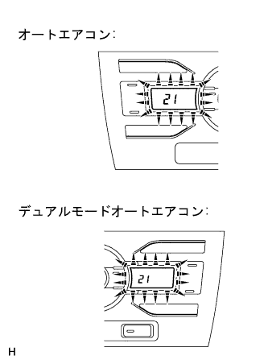

Perform the indicator check.
- □ HINT □
- After the indicator check is completed, the sensor check is performed automatically.
Press the "Recirculation" switch to perform the actuator check.
- ■ NOTICE ■
- The sensor check performed automatically after the indicator check cannot fully diagnose current malfunctions, so always perform the actuator check, then perform the sensor check again and check the results.
After the actuator check is completed, press the "AUTO" switch.
 |
Check the sensor check results shown on the set temperature display.
| Check Result | Code Display |
|---|---|
| Current malfunction | Blinking |
| Past malfunction | Blinking |
- □ HINT □
- The illustration shows the case where code "21" is output.
- If there are 2 or more malfunction codes, they are displayed in ascending order of code number.
If there are 2 or more malfunction codes and they are difficult to read, press the "DEF" switch to fix the code display (step operation) and read them.
- □ HINT □
- Each time the "DEF" switch is pressed, the items are displayed one step at a time.
If a sensor check code is output, read the code from the Diagnostic Trouble Code Chart. (see )
)
To end panel diagnosis, press the "OFF" switch.
- □ HINT □
- To proceed to the actuator check, press the "Recirculation" switch.